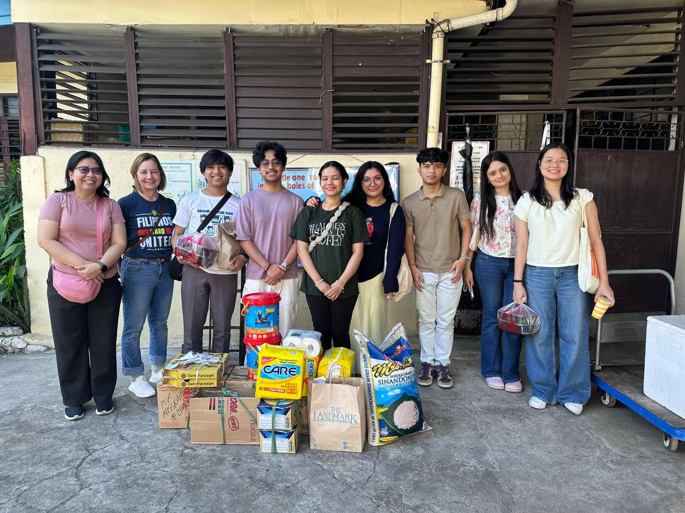
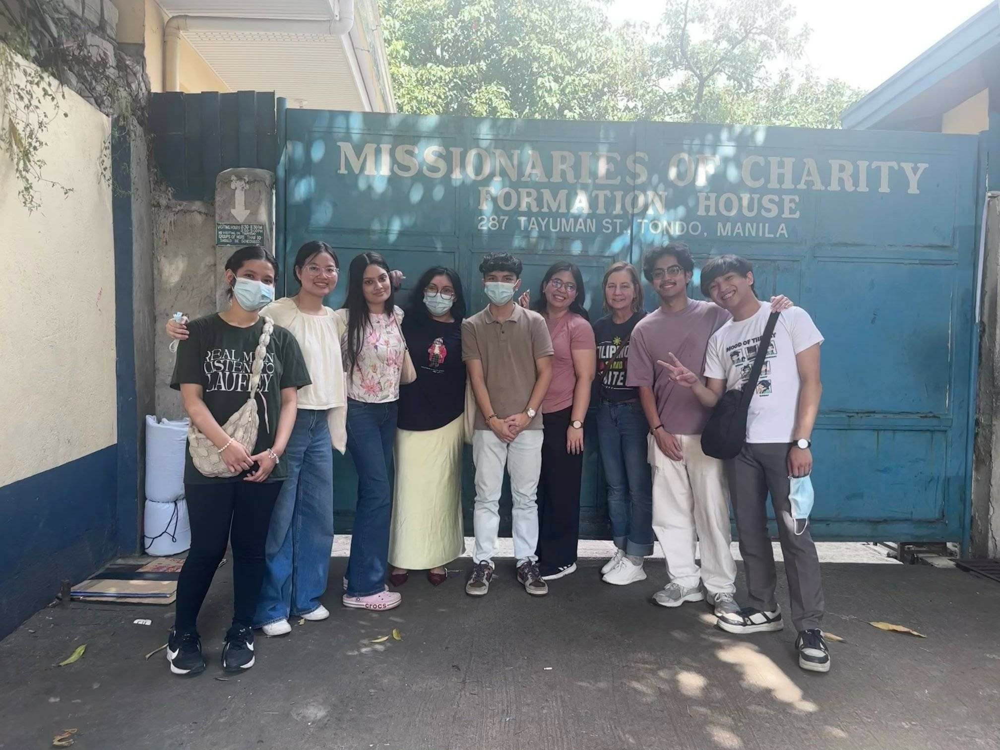

Showing up for other people is one of the things that grounds me most, and it's shaped nearly every chapter of my journey so far.
I first found this through writing. As a content writer and later Head of Content at Youthify, I got to craft stories that made mental health feel a little less lonely for the people reading them, and helping build that kind of safe, supportive space for others became something I couldn't stop chasing.
That instinct followed me into my work with the Wadhwani Foundation, where I helped design outreach that connected everyday Filipino mothers with real career upskilling opportunities. There's something quietly powerful about translating a program's benefits into language that actually reaches the people it's meant to help, and watching that reach turn into over 252K real connections.
Now, through Data Engineering Pilipinas, I get to pay that forward again, leading community initiatives that make data literacy feel accessible rather than intimidating for learners who are just getting started.
One of the volunteering experiences that stayed with me the most was hosting and spending an afternoon at a local old age home. I helped plan the visit from the ground up, putting together small activities, music, and games that would give the residents something to look forward to and be part of.


What struck me most was how much the residents simply wanted to be listened to. So much of the visit ended up being conversation: hearing stories from decades I hadn't lived through, swapping jokes, and just sitting with people who lit up at the company. Hosting the event taught me that volunteering isn't only about the activities you plan, it's about the presence you bring and how fully you show up for the people in front of you.
That afternoon reminded me why I keep coming back to this kind of work. Whether it's through writing, outreach, or simply sitting across from someone and listening, the through line is the same: making people feel seen.